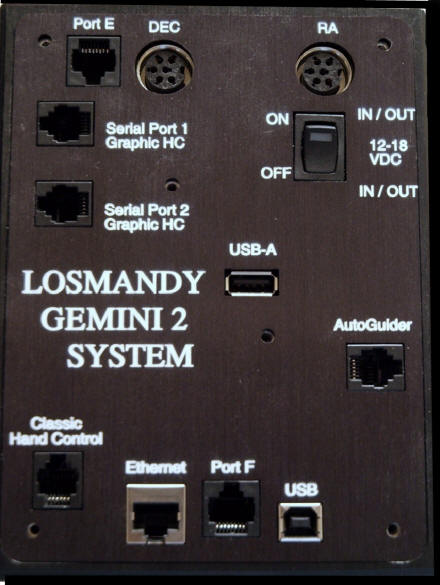

<!DOCTYPE html PUBLIC "-//W3C//DTD HTML 4.01//EN"
      "http://www.w3.org/TR/html4/strict.dtd">
<html lang="en-US">

<!-- Mirrored from gemini-2.net/faqG2.php by HTTrack Website Copier/3.x [XR&CO'2014], Tue, 04 Dec 2018 04:03:24 GMT -->
<head profile="http://www.w3.org/2005/10/profile">
<link rel="shortcut icon" href="favicon.ico" type="image/x-icon"/>

<head>
<meta http-equiv="REFRESH" content="1;url=index-2.html">
<meta content="text..html; charset=utf-8" http-equiv="Content-Type" />

<meta http-equiv="REFRESH" content="1;url=index-2.html">
<meta content="text/html; charset=utf-8" http-equiv="Content-Type" />
<meta content="en-us" http-equiv="Content-Language" />
<title>Gemini 2 Mount Controller</title>


<!--<link href="http://www.gemini-2.net/gemini-2.css" rel="stylesheet" type="text/css" />


<link href="gemini-2.css" rel="stylesheet" type="text/css" />


<script type="text/javascript" src="other-files/xweb-popup.js"></script>


<style type="text/css">
.auto-style5 {
	border: 2px solid #FF0000;
}
.auto-style6 {
	border-style: solid;
	border-width: 1px;
}
.whiteborder {
	border: 2px solid white;
}
</style>


<base target="_blank" />

</head>

<body style="color: #FFFFFF; background-color: #000000"> 

<!-- onload="FP_preloadImgs(/*url*/'gemini-images/buttons/button5.jpg',/*url*/'gemini-images/buttons/button6.jpg')">-->

<!--
<table  align="center" style="width:900px">
	<tr>
		<td class="style6">	New Users to the Gemini-2 Controller PLEASE start 
		first, by going down the menu list provided by clicking on the<br /><strong> "Start 
		Here" </strong>menu button above this message.&nbsp; This site will not 
		be supporting Windows 10.&nbsp; If there is anyone who wants to help 
		product instructions for Windows 10 please contact the webmaster.</td>
	</tr>
</table>
<!--
<br />

<table  align="center" style="width:900px" class="h3" >
	<tr>
		<td>WARNING: Here are <a href="warning.php" target="_blank">several operational warning</a> about the Gemini-2 
		&amp; Gemini-1 controllers including changing batteries. 
		</td>
		</tr>
</table>
-->


<hr noshade="noshade" style="width: 600px; height: 4px">


<!--<table  align="center" style="width:900px">
	<tr>
		<td class="style7">
		Click <a href="tellfirmwareversion.php" target="_blank">here for the latest firmware</a> 
		info.<br /> For a <a href="firmware-changes.php" target="_blank">sneak-peak</a> at the features of the future L5.2 Firmware Review dates 
		3 July on.
		<br>There is a new version of the 
		<a href="http://www.gemini-2.net/Gemini2_drivers/GeminiTelescopeInstaller.exe" target="_blank">ASCOM driver</a> and New Version 
		of it's 
		<a href="http://www.gemini-2.net/Gemini2_drivers/Gemini_Telescope_Net_Installation_and_Operation.pdf" target="_blank">Manual</a>.
	
 </td>
		</tr>
		
</table>

<hr noshade="noshade" style="width: 600px; height: 4px">-->
<!--

<table  align="center" style="width:900px">
	<tr>
		<td class="style7">There are now two versions of the Gemini-2 
		main unit, and two versions of the hand controller.
		<br>Click on the 
		individual image to see more details about the particular versions. 
		</td>
	</tr>
</table>
<table  align="center" style="width:900px" class="whiteborder">
	<tr>
		<td class="style7" style="width:450">
		NEW GEMINI-2 MINI<br />
		<a href="gemini-V2-pics.php">
		</a><br />
		
		</td>
		<td class="style7" style="width:450">
		ORIGINAL GEMINI-2.
			<br />
	<a href="gemini-V1-pics.php"  target="_blank">
		</a>
		</td>


	</tr>
</table>

<table align="center" style="width: 900px" class="auto-style5">
	<tr>
		<td class="style7">
		<a href="http://www.worldtimeserver.com/current_time_in_UTC.aspx" target="_blank">
		Get UTC TIME from World Time Server</a><br />
		<a href="http://www.gemini-2.net/hc/
time_zone_offset_chart.php" target="_blank">Time Zone Offset Table</a><br />
		<a href="http://gemini-2.net/hc/
timezonefacts.php" target="_blank">Time Zone Facts</a>
		
</td>
	
	<td>
	<script type="text/javascript" src="http://www.worldtimeserver.com/clocks/embed.js"></script>
	<script type="text/javascript" language="JavaScript">objUTC = new Object;objUTC.wtsclock = 
	"wtsclock024.swf";objUTC.color = "0000FF";objUTC.wtsid = "UTC";objUTC.width = 150;objUTC.height = 150;
	objUTC.wmode = "transparent";showClock(objUTC);</script>
	</td>
	</tr>
</table>
-->
<!--
<table  align="center" style="width:200px">
	<tr>
		<td class="style7whiteborder" ><a name="paynow"></a>
<form action="https://www.paypal.com/cgi-bin/webscr" method="post" target="_top">
<input type="hidden" name="cmd" value="_s-xclick">
<input type="hidden" name="hosted_button_id" value="S8N6YHH4W2NM2">
<table>
<tr><td><input type="hidden" name="on0" value="Non Tax Deductable Gift to help Webmaster">Non Tax 
	Deductible Gift to help Webmaster (Uses PayPal)</td></tr><tr><td><select name="os0">
	<option value="Small Gift">Small Gift $1.00 USD</option>
	<option value="Medium Gift">Medium Gift $5.00 USD</option>
	<option value="Large Gift">Large Gift $10.00 USD</option>
</select> </td></tr>
</table>
<input type="hidden" name="currency_code" value="USD">
<input type="image" src="gemini-images/buttons/gift-button.gif" border="0" name="submit" alt="PayPal - The safer, easier way to pay online!">

</form>


		</td>
	</tr>		
</table>

<table  align="center" style="width:900px">
	<tr>
		<td class="style7whiteborder" >
		Page last updated on August 1, 2015
		</td>
	</tr>
</table>

</body>
-->


